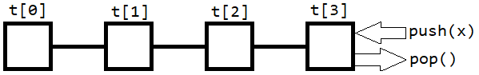
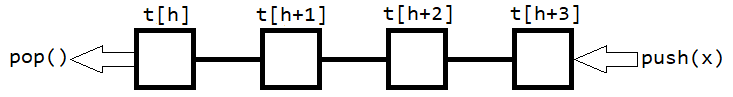
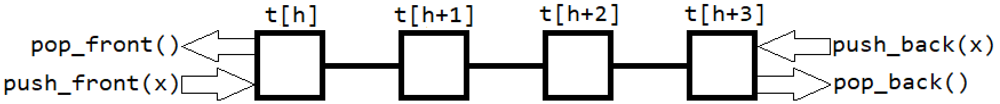

Стек (stack)
Тип данных, представляющий собой список элементов, организованный по принципу LIFO (last in - first out).
Поддерживает три операции (не считая классических empty() и size()):
push(x)- добавить в конец списка элемент со значением x;back()- узнать значение элемента в конце списка;pop()- удалить элемент из конца списка;

В С++ реализован в библиотеке <stack>, однако можно написать самому:
struct stack { vector <T> t; void push(T x) { t.push_back(x); } T get() { return t[t.size() - 1]; } void pop() { a.pop_back(); } }
Очередь (queue)
Тип данных, представляющий собой список элементов, организованный по принципу FIFO (first in - first out). Поддерживает четыре операции:
push(x)- добавить в конец списка элемент со значеним x;front()- узнать значение элемента в начале списка;back()- узнать значение элемента в конце списка;pop()- удалить элемент из начала списка;

В С++ реализована в библиотеке <queue>, но вновь можно написать самому:
struct queue { int head = 0; vector <T> t; void push(T x) { t.push_back(x); } T front() { return t[head]; } T back() { return t[t.size() - 1]; } void pop() { head++; } }
Двухсторонняя очередь (deque)
Проще всего провести аналогиую с колодой (deck) - можно как взять, так и положить карту как снизу колоды, так и сверху. Поддерживает шесть операций:
push_back(x)- добавить в конец списка элемент со значением x;push_front(x)- добавить в начало списка элемент со значеним x;back()- узнать значение элемента в конце списка;front()- узнать значение элемента в начале списка;pop_back()- удалить элемент из конца списка;pop_front()- удалить элемент из начала списка;

В С++ реализована в библиотеке <deque>, но и здесь несложно написать самому (правда, тогда заранее придётся выделить память на фиксированное число элементов):
struct deque { int head; vector <T> t; deque (int n) { head = n; t.resize(n); } void push_back(T x) { t.push_back(x); } void push_front(T x) { t[--head] = x; } T back() { return t[t.size() - 1]; } T front() { return t[head]; } void pop_back() { t.pop_back(); } void pop_front() { head++; } }